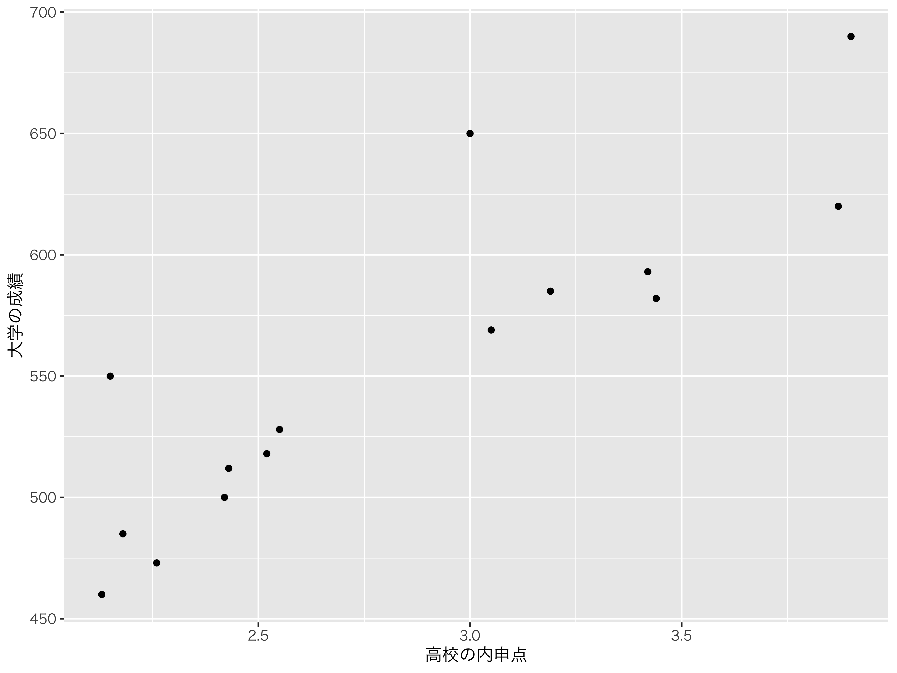
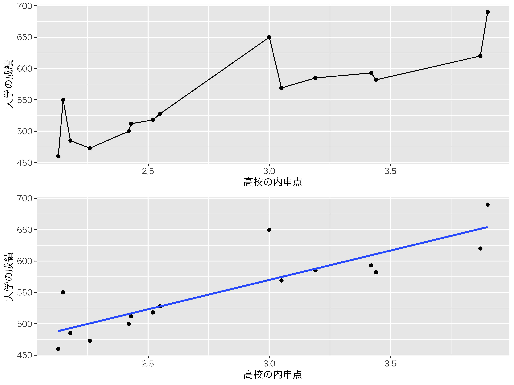
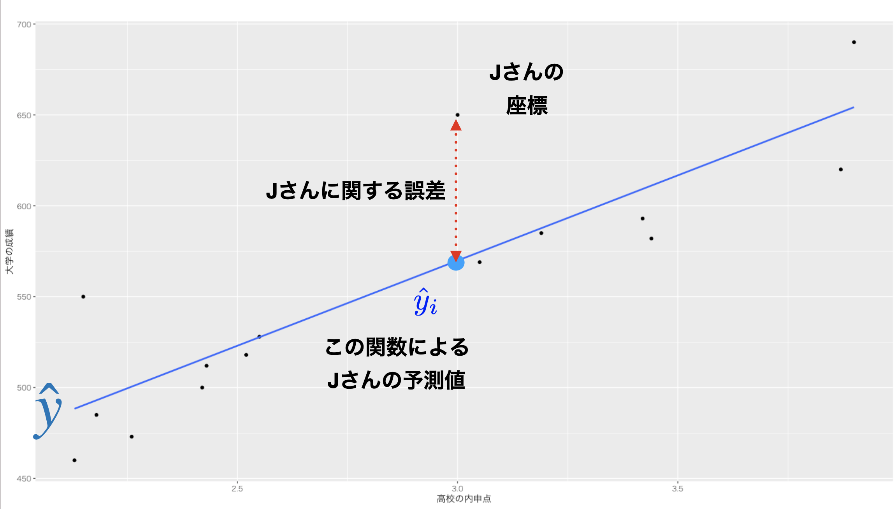
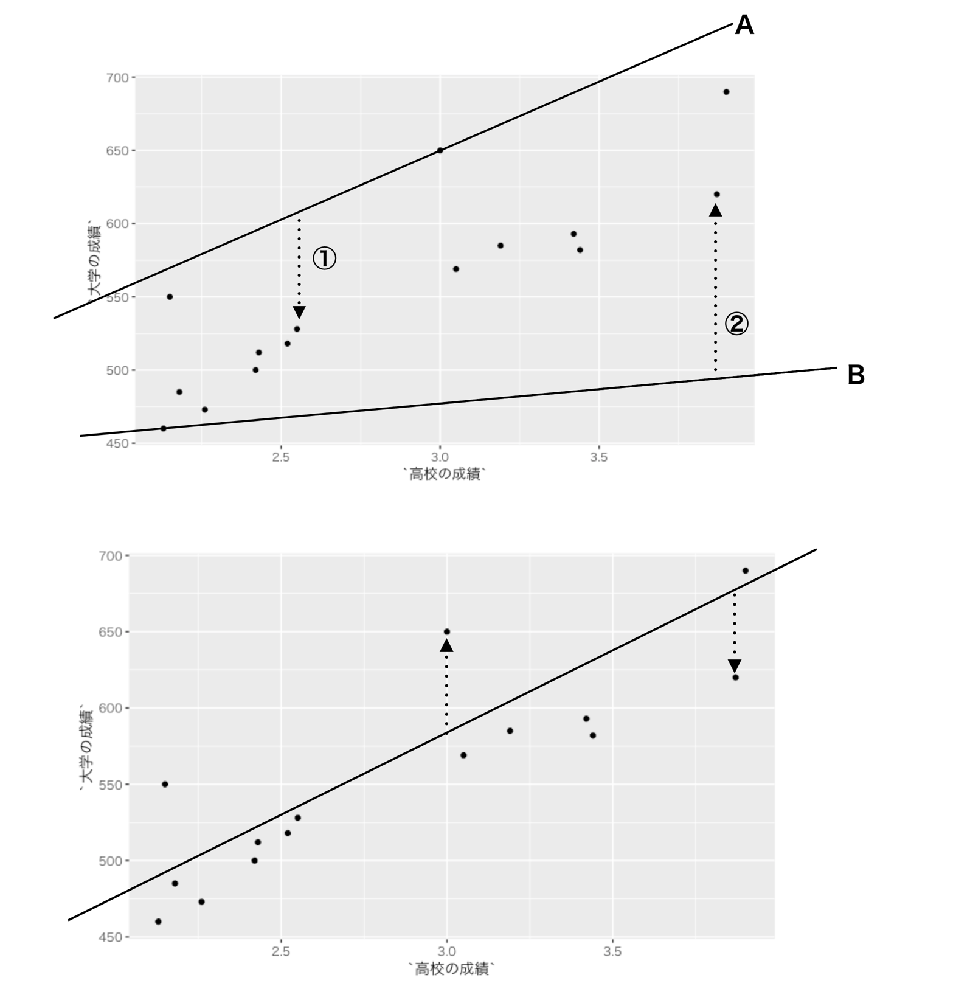

Chapter 29 線形モデルの基礎
ここまでの話の流れを振り返ると，次のように進んできたのがわかると思います。
記述統計によってデータを記述したり可視化したりする。
古典的テスト理論にあるように，心理学の基本はデータから目に見えない本当の値を探ることにある。
データには誤差がつきものであり，それを制御するために確率をつかう。
データにまとわりつく誤差は正規分布であり，その特徴を理解する。
では，ここからの話はどうなるかというと，いよいよ本題に入っていきます。 データに誤差がつくのは分かったとして，知りたいのは真の値，誤差を除いた全体の平均値です。 科学の目的の1つは予測と制御です270。個々のデータには誤差(個人差)が含まれますが，全体的にはなんらかの傾向があるだろうと考え，そのなんらかの傾向をで表現します。このモデルを数式で書くことで予測ができ，予測ができるのであれば対応を考えることができる，という流れです。
本講義のテーマである「見えないものを見るための心理統計」は，ここからいよいよ，データを通じて全体的な傾向を見つけるという意味で展開していくことになります。
29.1 相関関係とモデル
モデルとか傾向を予測するというと，なんだか複雑な話だと思われるかもしれませんが，全然そんなことはありません。
例えばみなさんよく気になる「成績」を例に考えてみましょう。例えば表1.1のように，高校での内申点と大学入試の成績がデータとして手に入ったとします。
| 学生ID | 高校の内申点 | 大学入試の成績 |
|---|---|---|
| A | 2.13 | 460 |
| B | 2.42 | 500 |
| C | 2.26 | 473 |
| D | 3.87 | 620 |
| E | 3.90 | 690 |
| F | 2.43 | 512 |
| G | 3.44 | 582 |
| H | 2.15 | 550 |
| I | 2.18 | 485 |
| J | 3.00 | 650 |
| K | 3.42 | 593 |
| L | 2.55 | 528 |
| M | 3.19 | 585 |
| N | 3.05 | 569 |
| O | 2.52 | 518 |
| 平均 | 2.834 | 554.33 |
\[tbl09_01\]
高校のデータは内申点なので5点満点にしてみました。大学のデータは1000点満点にしてみました。仮想データですのでなんでもよかったのですが，ここでは単位が違う例を出したかったのでこのようにしました。
さて，データは可視化するのが基本です。可視化してみましょう。ここでは2つの変数の関係を見たいので，X軸に高校の成績を，Y軸に大学の成績をとったが適しています。図1.1に散布図を書いてみました。

散布図を見てみよう
散布図を見ると，データからなんらかの傾向が見えてきますよね。左下から右上にかけて，点が散らばっているのがわかります。 そう，このデータには正の相関関係がありそうだということがわかります。
もちろん，があることが，すぐにがあることを意味するわけではありません。が，今回の場合は，高校の成績は大学の成績に時間的に先行しますし，どちらも人の能力を反映しているものとして理解ができそうです。ということで，この相関関係から予測することは(理論的，あるいは社会通念的にも)妥当ですから，私たちは「高校の内申点がよかった」ときくと「その人はきっと頭もいいんだろうね」「大学の成績も高いだろうな」と自然と考える＝予測するわけです。
予測は因果を仮定しなくても可能です。例えば町の消防署の数と火災発生件数は高い相関係数を持ちますが，ここから消防署が火災発生の原因だ，と考える人はいないでしょう。でもデータで相関関係が示されていることがわかれば，ある町の消防署の数が多いと聞くと，火災の多い町なのかな，と予測することはできるのです。また，相関関係だけが予測のツールではありません。相関関係は変数の直線的な関係を表しているに過ぎませんから，直線的でない現象に対しては相関係数は低くなります。例えば，血圧が高過ぎたり低過ぎたりすると，その人は不健康だなという予測はできるわけですから。
こうした注意は必要ですが，今回のデータは散布図(図1.1)からわかるように，相関関係も高く直線的な関係がありそうだ，ということになります。この直線的な関係を，で表すことを考えたいのです。
データが数字で得られていると，変数巻関係を関数で表現できます。関数は一般的に次のように書きます。 \[y = f(x)\] これは，\(x\)になんらかの数字が入ると，関数\(f\)でなんらかの加工がなされて，結果としての数字が\(y\)になる，という意味ですね。 心理学が科学であるとはすなわち，数学的現象主義でアプローチする，つまり変数間関係を関数で表現するということです。この関数のことをとも言います。モデルとは抽象化された理想的なものですが，科学においては数学的な関数のことをモデルというのですね。もちろんこのモデル，つまり関数の形がどんなものなのかは，現象によって様々なものが考えられます。
ところで今回のデータは左下から右上にかけて，直線的な関係があるように思えます。 直線的な関数は，みなさんすでに中学校の数学で学んだことがあると思います。直線的な関数は次のように表現できますよね。
\[y = ax + b\]
これこそ心理学で最もよく使われている，です。なぁんだ！と思いませんか。みなさんは多項式，二次式，三角関数など色々な関数を学んできたと思いますが，ここで使うのはただの\(y=ax+b\)なんです。
ただし，中学校で学んだような一次式とちょっと違うところもあります。中学校の一時間数は，例えば「ある2点P,Qを通る一次関数の切片\(b\)と傾き\(a\)を求めよ」，なんて話だったかと思いますが，今回のこの散布図にはご覧の通り，点は複数あってどこか二点を選んで線を引くわけではありません。しかも，全部の点を通るような直線はないのです。

線を引くのも難しい
図1.2の上の図は，全ての点を通る線を引いてみたのですが，当然直線にはなりません。下の図は直線ではありますが，全ての点を通っているわけではありません。しかし，目指すのは下のような直線です。全てを説明することはできませんが，だいたい当てはまっている，そういう関係を探そうというわけです。データには誤差や個人差がありますから，そのせいで直線関係が当てはまらないところがありますが，それらを除外して理想的な関係を考えれば直線なんじゃないか，というのがここでの課題になります。
線形関数は傾き\(a\)と切片\(b\)が変われば，色々な直線を引くことができます。ここでの狙いはデータに最も当てはまりがマシな直線関係を引くということになります。
少し余談ですが，データが直線関係にない場合や，データになるべくぴったり当てはめることを目的にすると，直線であるという縛りを捨てる必要があります。それはと呼ばれ，AI(人工知能)や機械学習と呼ばれているのはこの非線形関数を使ってデータの予測精度を上げていくものです。ですが，非線形関数はn次多項式になりますから，何が何やら意味がわかりません。意味がわからなくてもデータに当てはまればいいんだ，と言われたらそういうこともあるか，と思いますが，心理学のような学術的アプローチは人間一般に通じる理論が欲しいのですから，説明できない関数は不要なのです。なので，データにぴったり当てはまるとはいかないけれども，線形で大体説明できるところを探そうじゃないか，というわけです。
29.2 予測と線形モデル
それでは具体的に，目に見えない理想的な線形関係\(y=ax+b\)を探していきましょう。
ここで改めて，記号の表記やデータとの対応を丁寧に考えてみたいと思います。確かに中学数学でやるような\(y=ax+b\)の関数は見つかりませんが，今回はたくさんのデータ点があります。図1.1の各点は，表1.1の各行に対応しています。 このグラフの中の点が持つ座標は，データの値なのですから，例えば一番右上にある点はEさんの\((3.90,690)\)というデータの組み合わせになります。このように\(x,y\)の組み合わせがたくさんあるので，座標点は\((x_i,y_i)\)のように書くべきですね。この\(y_i\)は説明される側の変数ですから，，あるいはといい，\(x_i\)は説明する側の変数ですから，あるいはというのでした。 さてこれを踏まえて，求める式を次のように表します。
\[\hat{y_i} = b_0 + b_1 x_i\]
ここで\(\hat{y_i}\)の\(y\)の上についている記号は「ハット」といいます。関数がぴったりと当てはまるわけではないのですから，\(y_i\)と書くわけにはいかなかったのです。あくまでも理論的なですよ，ということを表すための記号がハットです。また，\(a\)の代わりに\(b_1\)，\(b\)のかわりに\(b_0\)としました。\(a\)とか\(b\)はただの記号ですので，他のどんな文字でもいいのですが，「1つ目の説明変数についてくる係数」という意味で\(b_1\)にしました271。この\(1\)は1つ目の変数，という意味です。切片は説明変数を持ちませんから，0番目にしたということです。今はまだ\(b_0, b_1\)の値がわかりませんが，これがわかれば，\(x_i\)のところに適当な数字を入れることで，変数\(y\)の値はこれぐらいなんじゃないか，という予測ができるともいえます。
このようにして引かれた直線\(\hat{y}\)は，線型結合で表された関数\(b_0 + b_1 x_i\)の解の集合です。\(b_0,b_1\)の値はわからないので今からそれを探しに行くわけですが，\(x_i,y_i\)の組み合わせはデータとしてわかっているのでした。例えばJさんのデータ，記号でいうなら\(x_{10},y_{10}\)ですが，それはそれぞれ\(x_{10}=3.0,y_{10}=650\)となります。しかし\(\hat{y_{10}}\)は実際のデータのずいぶん下の方にあります(図1.3)。これはJさんについてはこの関数の予測が外れていることを意味しますね。この外れている大きさをあるいはといい，記号\(e_i\)で表します。残差の記号\(e\)に個人の違いを表す添字\(i\)がついてあることからわかるように，残差はすべてのデータについて生じます。

データと予測値と誤差の関係
残差は次のように定義されます。 \[e_i = y_i - \hat{y_i}\] 予測値\(\hat{y_i}\)と実測値\(y_i\)の差分が誤差\(e_i\)だ，というわけですね。この式は次のように展開できます。 \[y_i = \hat{y_i} + e_i = b_0 + b_1 x_i + e_i\] ここで左辺がデータ(実測値)になりました。モデルからデータを予測する式ができたわけです。
これで表記上の準備ができました。あとは\(b_0,b_1\)の値を求めるだけです。\(b_0\)は直線がどこから始まるかという基準となる高さを表しますし，\(b_1\)は直線の角度，傾きを表すものです。この2つが決まっていないということは，どのような直線でも引くことができてしまうということでもあります。全部のデータ点にピッタリ合うような線を見つけることができないのですから，全体的に一番いい感じの線にしたいのですが，この「全体的に一番いい感じ」を数学的にどう言い表せば良いでしょうか？
29.3 最小二乗法

考えうる色々な予測の線
図1.4の上に，直線A,Bという2つの線を試しに引いてみました。直線Aのようなモデルだと，ある点は通っている＝あるデータ点については予測が実際の値に一致しているのですが，他のデータ点はすべて線(予測値の集まり)の下方向，つまり予測値が全部実際より大きい方向にズレていることになります。逆にBのモデルだと実際のデータ点はひとつを除いてすべてモデル直線(予測値の集まり)の上方向にあります。つまり予測値は全部低すぎるので，これも全体としてのズレは大きいと言わざるを得ないでしょう。
いいモデル式というのは，すべてのデータ点にフィットすることはない代わりに，プラスにもマイナスにも，均等にズレているものだということです(図1.4)。 個別には誤差がゼロにならないけど，全体としてはちょうど中庸のラインを通るように，切片と傾きを定めるのが良いようです。 これを数式的に考えてみましょう。個別の誤差は次のように表現できるのでした。
\[e_i = y_i - \hat{y_i}\]
これが全体的に真ん中を通るようにしたいわけです。全体的に，というのは言い換えると誤差を総和した時であり，真ん中を通るというのはプラスにもマイナスにも同じだけ，つまり合わせてゼロになるのが目標です。
\[\sum_{i=1}^N e_i = 0\]
これが目標なのですが，これは平均するとゼロになるということと同じで，誤差がどれぐらいの大きさだったのかがわかりません。誤差をなるべく小さくするような直線を求めているのですが，誤差の大きさが評価できないのでは困ります。 ここで思い出して欲しいのですが，正規分布の時にあったように，誤差は位置よりも(中心はゼロですから)，幅が重要です。位置ではなく幅でその大きさを評価するのです。幅，すなわち散らばりを表す指標を考えるには，分散の時のようにこれを二乗した値を考えます。
\[\sum_{i=1}^N e_i^2=\sum_{i=1}^N (y_i - \hat{y_i})^2 = \sum_{i=1}^N (y_i - (b_0 + b_1x_i))^2=Q(b_0,b_1)\]
この式の最後にあるように，最終的には未知数\(b_0\)と\(b_1\)の関数が出てきます。これを\(Q\)とあらわし，この\(Q\)が最小値を取るように\(b_0,b_1\)を求める，という条件で方程式を解いていけば良いことになります。
最後に出てきたこの関数，仮に\(Q\)としてありますが，これは切片\(b_0\)や傾き\(b_1\)の取り方で変わる量ですが，二乗の関数ですので極値を求めることができます。関数の極値を求めるためには微分が必要で，しかも今回は2変数の微分ですから偏微分という手法が必要になります。この手法について詳しくは@kosugi2018や(西内201712などを参考にしていただければと思いますが?)，この授業の範疇を超えるのでここでは細かい計算については割愛します。
このように誤差を最小にするようにデータにモデルをフィットさせる方法，あるいは誤差を最小にするという基準で未知数を推定する方法とも言えますが，この方法のことをと呼ぶということを知っておいてください。この方法を考え出したのが，正規分布を導出したガウスさんなんですね。すごいですねえ。
最小二乗法で係数を求めるのは，具体的には次のような計算式になります。
\[b_0 = \bar{y}-b_1\bar{x}\] \[b_1 = r_{xy}\frac{s_y}{s_x}\]
ここで\(r_{xy}\)は変数\(x,y\)の相関係数，\(s_x,s_y\)はそれぞれ\(x\)と\(y\)の標準偏差，\(\bar{x},\bar{y}\)はそれぞれ\(x\)と\(y\)の平均値です。いかがですか！すべてデータから計算できる記述統計量で，切片と傾きを求めることができました。 もちろん具体的に数字を入れて計算していってもいいのですが，実際には統計環境Rなど統計パッケージを使えば一瞬で答えを出してくれます。計算過程を理解しておくことも重要なのですが，まずはデータと条件から解が求められることを理解し，どのような条件，どういう基準で何を求めたのかをしっかり確認しておいてください。
数値例でみてみましょう。表1.1のデータから計算される記述統計量は，まず\(r_{xy}=0.868357,s_x=0.6185097,s_y=66.75292\)を計算して，傾きを求めます。 \[b_1 = 0.868357 \times \frac{66.75292}{0.6185097} = 93.71779\] 次にこの\(b_1\)と\(\bar{x} = 2.834,\bar{y}=554.333\)を使って，切片を求めます。 \[b_0 = 554.3333 - 93.71779 \times 2.834 = 288.7371\]
つまり，予測式は次のようにすれば誤差を最小にした，言い換えればすべてのデータ点から満遍なく隔たった直線が引けるということです。 \[\hat{y_i} = 288.7371 + 93.71779 x_i\]
この分析方法のことを特にといいます。今回は変数\(X\)から変数\(Y\)を予測する関数，\(y=f(x)\)を作りましたが，同じデータを使って変数\(Y\)から変数\(X\)を予測する関数，\(x=g(y)\)を考えて係数を求めることができます。この関数を交互に使って，\(y^1 = f(x) \to x^1 = g(y^1) \to y^2 = f(x^1) \to x^2 = g(y^2) \to \cdots\)と続けて行くと，最終的に\(x^n\)は変数\(X\)の平均値に，\(y^n\)は変数\(Y\)の平均値に近づいて行きます。このように回って回って平均に帰って行くので，という名前になっています272。回帰分析によって得られた係数のことをともいいます。
ここで回帰係数の切片項，\(b_0\)は何かというと，\(x=0\)の時の値になります。今回の例でいうと，内申点が0点であったら大学でどれぐらいの成績が取れるか，ということですね。つまりこれはベースラインだといえます。 では傾きを表す\(b_1\)は何でしょうか。これは\(x\)の変数が1上がった時の，\(\hat{y}\)の上昇率を表しています。今回の例では，内申点が1点上がったら大学での成績がどれぐらい上がると予想されるか，ということですね。 このように，線形モデルでは，変数を伸ばしたり(\(b_1\)倍したり)，かさ上げしたり(\(b_0\)がベースライン)しながら\(\hat{y_i}\)が\(y_i\)に最もうまく近づくように，重みつき線型結合をすることになります。なんらかの基準に対して伸ばしたり嵩上げしたり，という表現系は統計モデルのあちこちで見掛けることができます。
29.4 予測の評価
こうして回帰係数を求めることができました。これはとても嬉しいことですね！嬉しいことですよ！だってデータから関数関係がわかったのですから。関数関係がわかるということは，\(y=f(x)\)の\(x\)に数字を入れれば\(y\)の値がわかるということです。実際のデータ\(x_i\)をいれると\(\hat{y_i}\)がわかります。これを見ることで，そのデータ点がどの程度モデルから外れているかということがわかります。誤差の大きさを量的に見積もれるわけです。さらに，もちろん，未来が予測できますね！実際のデータではなく，新しい数字を入れれば予測値が出てくるわけです。例えば今回の例で言えば「高校の内申点が2点だった」とすれば，大学での成績は\(288.7371+2\times93.71779=476.1727\)と計算できます。わざわざ大学に進学しなくても，この程度の内申点ならこれぐらいの成績をあげるだろう，ということが事前にわかるということです。素敵！
実は，BIGデータだとか，AIだとかで騒いでいる話の基本は，これのことなのです。数式に入れるデータが大量であること，複数の予測変数を使うことなど，このモデルを拡張していく必要はありますが，基本はこのような「モデルをデータに当てはめて予測する」というところにあるわけです。今回はその最も単純な形，すなわち一次関数・線形モデルでしたが，人間の行動，市場の動向，あるいは次のレースで勝つ馬はどれか，なんてこともモデルを複雑にしつつ予測して行くことができるのです。
ただここで注意しておいてもらいたいのは，このように計算ができることと予測が当たることは別だ，ということです。本当に内申点2点のひとが，大学で476点になるかどうかはわかりません。なぜなら，今回のこの係数は得られたデータに最もフィットした形で算出しましたが，それでも全ての点に合致しているわけでなく，一番当てはまりの程度がマシだ，というだけであり，実際には必ず予測できない残りの部分，すなわちがあるからです。
このように，モデルをデータに当てはめて分析する時は，その当てはまりの程度を別途評価しなければなりません。この評価の指標のことをといいます。 回帰分析の場合，予測値は\(\hat{y_i}\)であり，実際のデータは\(y_i\)です。両者の関係は\(\hat{y_i}-y_i=e_i\)でしたね。予測値と実際のデータがどれぐらい近いかを表すために，この2つの相関係数\(r_{\hat{y}y}\)を考えることにします。相関係数ですから，この数字は\(-1\le r_{\hat{y}y} \le 1\)の範囲内に収まるのですが，負の相関であっても相関が高ければある意味合致はしているのですから，ここでの符号にはそれほど興味がありません。そこでこの相関係数を二乗してしまいましょう。この\(r_{\hat{y}y}^2\)のことを，と言い，適合の指標と考えます。\(R^2\)値は別名ともいいます。
この\(R^2\)値は，計算すると次の関係にあることがわかります273。 \[R^2 = \frac{s_{\hat{y}}^2}{s_y^2}\] 言葉でいうと，被予測変数の分散中に占める予測値の分散の割合ですね。つまり，この予測モデルが予測される変数の情報のうち，何% を説明したかがわかるわけです。
今回のデータについていうと，\(R^2=0.754\)でした。予測モデルで75%ぐらいは説明するので，まあまあ良いモデルだったと言えるかもしれません。 論文などで回帰分析について書かれている場合は，この\(R^2\)あるいは類する適合度指標をよく見るようにしましょう。結果は出ても，説明率がうんと低ければ，実質的になんの説明もできていない，予測には全く役立たないということでもあるのですから。
29.5 課題
29.5.0.0.1 回帰係数を求めてみよう
表1.1のデータを使って，大学入試の成績から高校の内申点を予想する回帰分析を行なった時，その切片と傾きはいくらになるか計算してみてください。なお，大学の成績から高校の成績を予測するのですから，因果の向き(時間の向き)は逆転しています。これで因果関係がわかることはないのですが，データから相関関係があれば回帰はできるのであり，それをどういう意味で使うか，伝えるかは使う側の人の問題だということを忘れないでください。
もう1つは「説明する」です。↩︎
なんで\(b\)なんだ\(a\)でもいいじゃないか，と言われたら返す言葉もないのですが，慣例的に\(b\)で係数を表しています。ちなみに今はアルファベットの\(b\)ですが，後期になると\(b\)のギリシア文字\(\beta\)に変わります。ギリシア文字で表現するのは推測統計学的な推定に関わるようになってからです。↩︎
親の身長から子供の身長を予測することを考えてみてください。次にその子が親になって，その子がまた親になって・・・という時に，「背の高い親からは背の高い子しかうまれない」というルールであれば，世界はものすごく高身長なひとと低身長な人に二分されてしまいます。そうではないということは，背の高い親から背の低い子が生まれることもあるし，その逆もあるということです。また野球選手などでルーキーのときは成績がいいのに，2年目になったら成績が下がる，というのは2年目のジンクスなどといわれますが，その人の平均的な能力以上のスコアが出た次の年に，平均的な値に帰るために低くなりがちなことは，当然ありえることでもあるのです。こうした効果のことを回帰効果といいます。↩︎
細かい計算式については，(kosugi2018のPp.133をみてください?)。↩︎